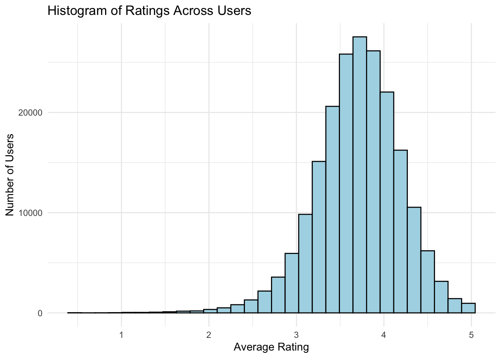
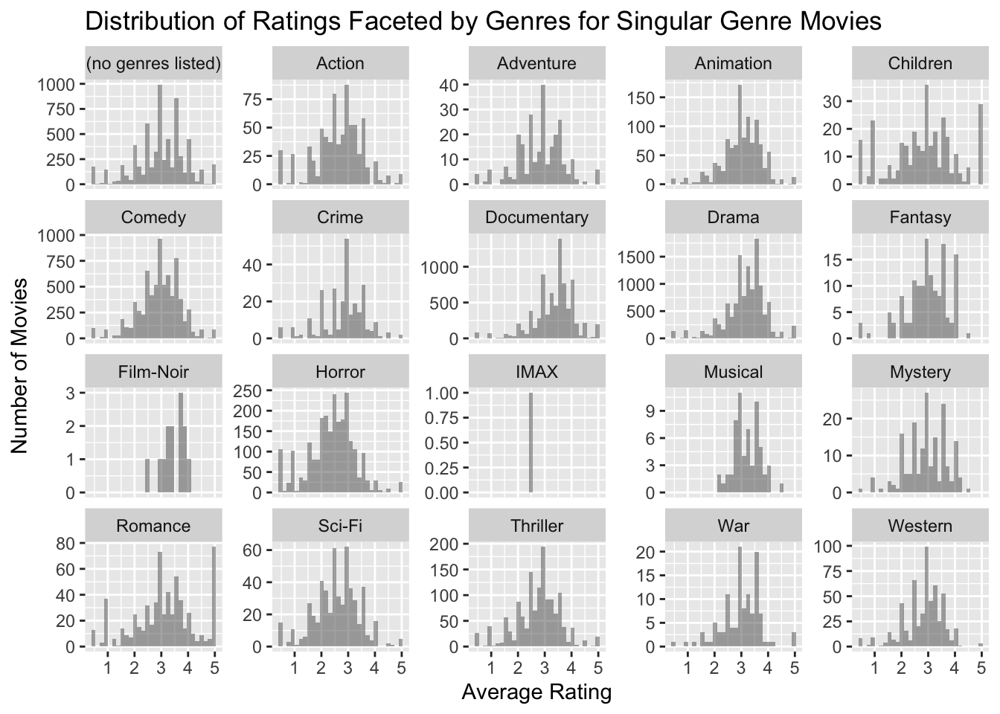
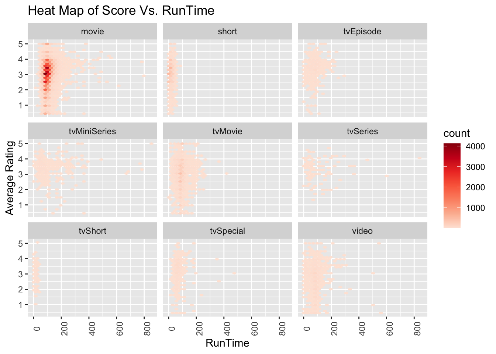

3.1 What is the Distribution of Ratings Across Users
Code
library(tidyverse)
── Attaching core tidyverse packages ──────────────────────── tidyverse 2.0.0 ──
✔ dplyr 1.1.4 ✔ readr 2.1.5
✔ forcats 1.0.0 ✔ stringr 1.5.1
✔ ggplot2 3.5.1 ✔ tibble 3.2.1
✔ lubridate 1.9.3 ✔ tidyr 1.3.1
✔ purrr 1.0.2
── Conflicts ────────────────────────────────────────── tidyverse_conflicts() ──
✖ dplyr::filter() masks stats::filter()
✖ dplyr::lag() masks stats::lag()
ℹ Use the conflicted package (<http://conflicted.r-lib.org/>) to force all conflicts to become errors
Code
result=read.csv("result.csv")avg_rating=result |>group_by(movieId) |>summarise(title =first(title),genres =first(genres),mean_score=mean(rating, na.rm=T)) ratings=read.csv('/Users/erinma/Documents/STAT5702/ml-32m/ratings.csv')avg_rating_user=ratings |>group_by(userId) |>summarise(mean_score=mean(rating)) ggplot(avg_rating_user, aes(x = mean_score)) +geom_histogram(fill ="lightblue", color ="black") +labs(title ="Histogram of Ratings Across Users", x ="Average Rating", y ="Number of Users") +theme_minimal()
`stat_bin()` using `bins = 30`. Pick better value with `binwidth`.

This histogram shows that the dataset is skewing to the left with a peak between 3 and 4. The peak being above an average rating demonstrates that these users generally will rate movies fairly positively. To assess the distribution of ratings across different movies, please view our interactive graph
3.2 Certain Movies are Labeled Multiple Genres. Let’s Review the Distribution of Movies and their Genre Counts
ggplot(avg_rating, aes(x = genreCount)) +geom_bar() +labs(title ="Bar Chart of Movie Count Given The Number of Genres", x ="Genre Count", y ="Number of Movies") +scale_x_continuous(breaks =seq(min(avg_rating$genreCount), max(avg_rating$genreCount),by =1)) +theme_minimal()
Some movies fall under multiple genres and thus are labeled as such. To check this, we created an initial check to see that the range of labeled genres (or genre counts) for each movie ranges from 1 to 10. We decided to make a graph seeing the number of movies that are labeled under each Genre Count. With this, we can see that the majority of movies are only labeled under one genre and the number of movies decreases as the genre count increases.
3.3 Does a Movie being labeled With More Genres Mean That it Will Be Better Rated?
Code
avg_rating_genre=avg_rating |>group_by(genreCount) |>summarise(mean_score_genre=mean(mean_score, na.rm=T), count_genre=n()) ggplot(avg_rating_genre, aes(x = mean_score_genre, y = genreCount)) +geom_point(size =3, color ="blue") +labs(title ="Cleveland Dot Plot Display of the Average Rating Across Different Genre Counts",x ="Average Rating",y ="Genre Count" ) +scale_x_continuous(limits=c(0, 5)) +scale_y_continuous(breaks =seq(1, nrow(avg_rating_genre), 1), ) +theme_minimal()
We built a Cleveland Dot Plot to check on the Rating for each genre count. The resulting graph above shows no pattern between genre counts and average rating as it seems that movies with 7 genres labeled rank better than movies with 1 genre labeled but movies with 10 genres labeled rank worse than movies with 1 genre labeled. Additionally, all of these average ratings are grouped around a rating of 3 meaning that no genre count is significantly rated better than the others. Furthermore, biases in average rating might occur as (as seen above in the bar chart) the genre count increases, the number of movies in that category decreases which means that the mean is not accurate as it is based on less data.
3.4 Viewing the Distribution of Ratings for Movies Given the Genre Count
Code
ggplot(avg_rating, aes(x=mean_score))+geom_histogram() +facet_wrap(~genreCount, scales="free_y") +labs(title ="Distribution of Ratings Faceted by Genre Count", x ="Average Rating", y ="Number of Movies")
`stat_bin()` using `bins = 30`. Pick better value with `binwidth`.
Warning: Removed 3153 rows containing non-finite outside the scale range
(`stat_bin()`).
By faceting on Genre Counts we can see if anomalies in distribution exist in certain genre counts. The resulting graph shows us that besides certain graphs that have minimal data, most genre counts follow the same distribution of having movies rated at an average rating.
3.5 Let’s see the Distribution of Ratings when Looking at Singular Genre Movies
Code
avg_rating_1=filter(avg_rating, genreCount==1)ggplot(avg_rating_1, aes(x=mean_score))+geom_histogram(alpha=0.5) +facet_wrap(~genres, scales="free_y") +labs(title ="Distribution of Ratings Faceted by Genres for Singular Genre Movies", x ="Average Rating", y ="Number of Movies")
`stat_bin()` using `bins = 30`. Pick better value with `binwidth`.
Warning: Removed 1924 rows containing non-finite outside the scale range
(`stat_bin()`).

When faceting on genre for single genre movies, we can see that most genres follow the trends we previously discussed. However, we can note that the distribution of Children’s Movies is very interesting as a large portion of movies are rated really poorly and a large portion of movies are rated really positively. Similarly, for Romance movies, it seems that the highest bar in the histogram occurs near 5 meaning that a large portion of Romance Movies are rated very positively.
3.6 Double Checking The Counts of Each Genre for Single Genre Movies
Code
avg_rating_1$genres <-fct_reorder(avg_rating_1$genres, avg_rating_1$genres, .fun = length, .desc =TRUE)ggplot(avg_rating_1, aes(x = genres)) +geom_bar() +labs(title ="Bar Chart of the Number of Movies Based on Genre ", x ="Genre", y ="Number of Movies") +theme(axis.text.x =element_text(angle =90, hjust =1))
As seen above, the genre that is occurs most in the dataset is Drama while the genre that occurs least in the dataset is IMAX.
3.7 Do Programs with Longer Title Runtimes Score Have Higher Ratings?
Code
library(readr)data <-read_tsv('title.basics.tsv')
Warning: One or more parsing issues, call `problems()` on your data frame for details,
e.g.:
dat <- vroom(...)
problems(dat)
Rows: 11299730 Columns: 9
── Column specification ────────────────────────────────────────────────────────
Delimiter: "\t"
chr (8): tconst, titleType, primaryTitle, originalTitle, startYear, endYear,...
dbl (1): isAdult
ℹ Use `spec()` to retrieve the full column specification for this data.
ℹ Specify the column types or set `show_col_types = FALSE` to quiet this message.
Code
data$genres=NULLdata$primaryTitle=NULLdata$originalTitle=NULLvariable='/Users/erinma/Documents/STAT5702/ml-32m/'links <-read.csv(file.path(variable, 'links.csv'))joinLink <-merge(avg_rating, links, by ="movieId", all.x =TRUE)data$tconst <-as.numeric(gsub("\\D", "", data$tconst))names(data)[1] <-"imdbId"imdbCombine <-merge(joinLink, data, by ="imdbId", all.x =TRUE)imdbCombineMinutes=filter(imdbCombine, runtimeMinutes!='\\N')imdbCombineMinutes$runtimeMinutes=as.numeric(imdbCombineMinutes$runtimeMinutes)
Code
ggplot(imdbCombineMinutes, aes(x=runtimeMinutes, y=mean_score))+geom_hex()+scale_fill_distiller(palette='Reds', direction=1) +facet_wrap(~titleType) +labs(title ="Heat Map of Score Vs. RunTime ", x ="RunTime", y ="Average Rating")+theme(axis.text.x =element_text(angle =90))
Warning: Removed 3110 rows containing non-finite outside the scale range
(`stat_binhex()`).

Code
ggplot(imdbCombineMinutes, aes(x=runtimeMinutes, y=mean_score, color=titleType))+geom_point(alpha=0.5)+theme(axis.text.x =element_text(angle =90)) +labs(title ="Scatterplot of Score Vs. RunTime ", x ="RunTime", y ="Average Rating", color ="Film Type")
Warning: Removed 3110 rows containing missing values or values outside the scale range
(`geom_point()`).
The Heat Map and Scatterplot show that very few runtimes go above 400 minutes but there generally seems like there is no trend between Rating and RunTime. Furthermore, it seems that most shorts and tvshorts have the quickest runtimes and that movie runtimes seem to be generally higher than shorts. This aligns with our general knowledge of shorts and movies.
3.8 Are certain genre selections correlated?
3.8.0.0.0.1 Specifically, for people who watch a lot of movies of a particular genre, are they more likely to gravitate toward another genre, or perhaps they are more likely to steer clear of a different genre?
data <- user_genre_proportions[, !names(user_genre_proportions) %in%"userId"]# Ensure the column names are valid (e.g., no special characters)colnames(data) <-make.names(colnames(data))# Select the columns for the specific pairs you want to plot (removing "Children" and "Fantasy")pairs_to_plot_p <-list(c("Adventure", "Fantasy"),c("Adventure", "Action"),c("Animation", "Children"),c("Animation", "Fantasy"),c("Children", "Musical"),c("Action", "Sci.Fi") # Keep Sci.Fi as is since make.names() converts it)# Calculate correlations for each paircorrelations <-sapply(pairs_to_plot_p, function(pair) {cor(data[[pair[1]]], data[[pair[2]]], use ="complete.obs")})# Create individual scatter plots for each pair, adding the correlation value as textplot_list <-lapply(1:length(pairs_to_plot_p), function(i) { pair <- pairs_to_plot_p[[i]]# Replace Sci.Fi with Sci-Fi in the titles plot_title <-gsub("Sci.Fi", "Sci-Fi", paste(pair[1], "vs", pair[2]))ggplot(data, aes(x = .data[[pair[1]]], y = .data[[pair[2]]])) +geom_point() +labs(title = plot_title) +# Only add the title, leave axis labels unchangedannotate("text", x =max(data[[pair[1]]]), y =max(data[[pair[2]]]), label =paste("r =", round(correlations[i], 2)), hjust =1, vjust =1, color ="blue") +theme_minimal() +theme(plot.title =element_text(size =9), # Smaller plot titleaxis.title.x =element_text(size =8), # Smaller x-axis titleaxis.title.y =element_text(size =8), # Smaller y-axis titleplot.margin =margin(t =15, r =5, b =5, l =5) # Increase top margin )})# Arrange the plots into one panel with adjusted marginsgrid.arrange(grobs = plot_list, ncol =3)# Adjust the position of the panel title to avoid clippinggrid.text("Positive Correlation between Genre Selection", x =0.5, y =0.982, gp =gpar(fontsize =13, fontface ="bold"))
These pairs of genres demonstrate a relatively high positive correlation with each other, meaning that for each pair (A, B) shown in the graph, people who watch a lot of movies in genre A are more likely to also watch lots of movies in genre B.
Code
# Select the columns for the specific pairs you want to plot (removing "Children" and "Fantasy")pairs_to_plot_n <-list(c("Adventure", "Drama"),c("Romance", "Action"),c("Comedy", "Thriller"))# Calculate correlations for each paircorrelations <-sapply(pairs_to_plot_n, function(pair) {cor(data[[pair[1]]], data[[pair[2]]], use ="complete.obs")})# Create individual scatter plots for each pair, adding the correlation value as textplot_list <-lapply(1:length(pairs_to_plot_n), function(i) { pair <- pairs_to_plot_n[[i]]# Replace Sci.Fi with Sci-Fi in the titles plot_title <-gsub("Sci.Fi", "Sci-Fi", paste(pair[1], "vs", pair[2]))ggplot(data, aes(x = .data[[pair[1]]], y = .data[[pair[2]]])) +geom_point() +labs(title = plot_title) +# Only add the title, leave axis labels unchangedannotate("text", x =max(data[[pair[1]]]), y =max(data[[pair[2]]]), label =paste("r =", round(correlations[i], 2)), hjust =1, vjust =1, color ="blue") +theme_minimal() +theme(plot.title =element_text(size =9), # Smaller plot titleaxis.title.x =element_text(size =8), # Smaller x-axis titleaxis.title.y =element_text(size =8), # Smaller y-axis titleplot.margin =margin(t =15, r =5, b =5, l =5) # Increase top margin )})# Arrange the plots into one panel with adjusted marginsgrid.arrange(grobs = plot_list, ncol =3)# Adjust the position of the panel title to avoid clippinggrid.text("Negative Correlation between Genre Selection", x =0.5, y =0.982, gp =gpar(fontsize =13, fontface ="bold"))
These pairs of genres demonstrate a relatively high negative correlation with each other, meaning that for each pair (A, B) shown in the graph, people who watch a lot of movies in genre A are more likely to not watch movies in genre B.
3.9 Could movie ratings include people’s bias?
3.9.0.0.0.1 If people tend to watch lots of movies of a certain genre, is it more likely that they would rate that specific genre higher?
Warning: Removed 18113 rows containing non-finite outside the scale range
(`stat_boxplot()`).
By using a proportion cutoff of 0.7, we divide all ratings into two categories: ratings for genres that a specific user watches frequently (when the proportion is greater than or equal to 0.7) and ratings for genres they watch less frequently (when the proportion is less than 0.7). From the boxplot, we can tell that there is a difference in the distribution of average ratings between these two groups, demonstrating that genres watched more often tend to receive higher ratings in general compared to those watched less often.
3.10 Do different genres tend to evoke different emotions in people?
# Merge sentiment and movie_ohe on 'movieId'combined_data <-merge(sentiment, movies_ohe, by ="movieId")# Select relevant columns (genres and sentiment_score)genre_columns <-c("Adventure", "Animation", "Children", "Comedy", "Fantasy", "Romance", "Drama", "Action", "Crime", "Thriller", "Horror", "Mystery", "Sci.Fi", "Documentary", "War", "Musical", "Western", "Film.Noir")# Reshape data to a long format for easier plottinglong_data <- combined_data %>%select(movieId, sentiment_score, all_of(genre_columns)) %>%pivot_longer(cols =all_of(genre_columns), names_to ="Genre", values_to ="In_Genre") %>%filter(In_Genre ==1) # Keep only rows where the movie belongs to a genrelong_data$Genre <-recode(long_data$Genre,"Sci.Fi"="Sci-Fi","Film.Noir"="Film-Noir")# Generate boxplotsggplot(long_data, aes(x = Genre, y = sentiment_score)) +geom_boxplot() +theme(axis.text.x =element_text(angle =45, hjust =1)) +labs(title ="Boxplot of Sentiment Scores by Genre",x ="Genre",y ="Sentiment Score")
In the dataset we used, users assigned tags to movies, which are words or phrases. We utilized the “syuzhet” package to derive the sentiment behind those tags. Positive values represent positive sentiments; zero means neutral sentiments; and negative values reflect negative sentiments. From the graph above, we observe that overall, genres that received a positive sentiment include: Animation, Children, Fantasy (slightly positive), Romance (slightly positive), and Musical. Genres that received a negative sentiment include: Action, Crime, Drama (slightly negative), Film-Noir, Horror, Mystery, Thriller, War, and Western. Genres that received a neutral sentiment are: Adventure, Comedy, Documentary, and Sci-Fi.